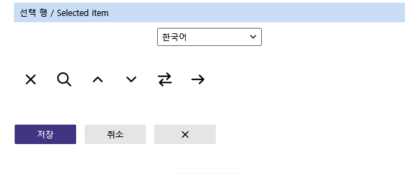
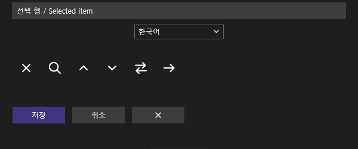
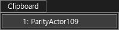

Tracefolio REPORTS & ISSUES
Tracefolio REPORTS & ISSUES0.0.108 메뉴 선택 팔레트
기존 기록 이전원문에 기록된 작업 내용과 당시 검증 범위를 정리한 보관 기록입니다.
0.0.108 메뉴 선택 팔레트 수정
0.0.108 메뉴 선택 팔레트
메서드 목록과 클립보드 메뉴 2개 사용처를 일반 버튼 팔레트에서 분리했습니다. 라이트 #C9DDF5 / 다크 #3D3D3D. 현재 VS 검사 프로필 0.0.108 설치, 6/6 바이너리 일치, 양쪽 VS용 빌드 통과.
제품 ProductTheme 코드의 WPF 렌더링
VS 리소스 키를 대체한 렌더러입니다. 실제 IDE 라이트 캡처가 아닙니다.


설치된 CA108 실제 다크 메뉴

이전 VA·CA107 라이트 비교 기준
이전 실행을 새 버전 통과로 계산하지 않습니다.


아직 완료되지 않은 검증
이번 테마 메뉴 입력은 적용 후 화면이 다크로 남는 경우가 반복됐습니다. 검색 팝업 입력도 본창 필터로 전달되는 현상을 확인했습니다. 잘못 입력된 문자와 필터는 복구했고, VA 본문은 원본과 같고 saved=true인 것을 확인했습니다. 새 버전의 실제 IDE 라이트·메서드 목록 팔레트는 미검증입니다. 다크 메뉴 촬영이나 오프스크린 렌더를 라이트 실행 통과로 합산하지 않습니다.
이번 새 전체 기능 동등성 확정: 0/108. 이는 구현율 0%라는 뜻이 아닙니다. 문서 부분 명세 확보 108/108(100%)와 구분합니다. 전체 목표는 진행 중입니다.
정확한 범위·해시 · 설치 바이너리 · 빌드 · VA 복구 상태
XERJ: 사용 — 공통 팔레트 검색 후 현재 소스 확인.
후속 실행: 팝업 입력 경로를 복구해 실제 라이트 재검증을 수행했습니다. 후속 원본 촬영·판정을 참조하십시오. 이 페이지의 미완료 표기는 당시 상태입니다.
원문과 편집 이력
- 원문 SHA-256:
686faf4ea8cb071b4802a6578ea95accbb5c122445c59918400d0edcc3ad0286 - 표시 날짜는 원본 파일의 수정 시각입니다. 작업 완료 시각은 원문에 있는 값을 기준으로 확인합니다.